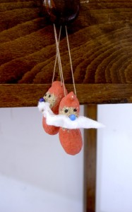
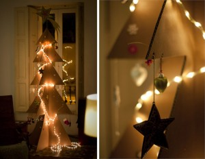
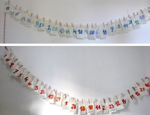

Navidad
Categoría

Tela
Árbol de navidad 02
Pequeños árboles de filtro. Abajo tiene un cono de cartulina, el filtro marrón es una franja y el filtro verde son círculos pegado de abajo hacia…
Leer más →

Navidad
Oro
T odo en color oroNueces, bellotas, hojas... ¡ahora cuelgan del árbol de navidad!
Leer más →

Cartón
Árbol de navidad 01
Dependiendo de la caja de cartón que encontremos sale un árbol grande o más pequeño.
Leer más →
Comida
Casita de bruja 01
Entonces oyeron una voz suave que procedía del interior: ´¿Será acaso la ratitala roe mi casita?Pero los niños respondieron: ´Es el viento, es el viento que…
Leer más →
Navidad
Calendario adviento 01
Los calendarios de adviento de Hannah y Noah. ¡Mañana se abre el primer número!
Leer más →